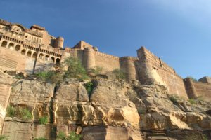
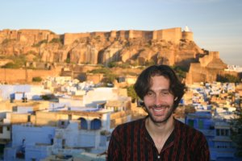

Le 10 décembre 2004,
Apres un copieux petit dejeuner a base de curd (yahourt) au miel et a la banane, suivi de toasts a la confiture, le tout accompagne d’un bon the noir, nous partons deambuler dans les rues bleutes de la ville. La couleur bleue des facades auraient pour but de refraichir les maisons durant les grosses chaleurs et d’eloigner les moustiques. La ville est calme, pas de rabatteurs en vue, ca change !
 Nous montons vers le fort de Meherangarh en passant par de tres beaux jardins et entamons notre visite de l’edifice rajpoute avec un casque nous racontant l’histoire du fort en francais !! Le fort est somptueux et les chambres des maharajas, splendides. La visite dure longtemps mais nous ne regrettons pas ! Juste avant de sortir du fort, nous assistons a un tournage de film ! Michael est tout fou... Des cavaliers noirs sur leur beau cheval galopent a travers la citadelle parmi les figurants habilles en haillons. C’est marrant a voir !
 La visite de la ville se poursuit par un magnifique edifice de marbre blanc : le Jaswant thada qui se dresse non loin du fort. Il ressemble a un Taj Mahal en miniature se detachant parmi les chaudes couleurs du soleil. Le retour a l’hotel se fait difficilement a cause des tres nombreuses ruelles qui parsement la ville et dans lesquelles on peut se perdre facilement. Une fois rentres, nous restons un long moment a admirer la vue du toit de l’hotel sur le fort de Meherangarh tandis que le soleil decline. C’est romantique...
Eve-Laure
{kind=link}
{kind=link}